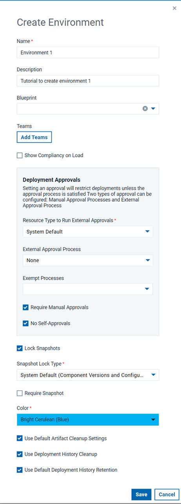

Creating environments
Before you can run a deployment, you must define at least one application environment that associates components with an agent on the target host.
Before you begin
Some of the configuration options might be resticted based on the role assigned to you. Check with your administator, if you need a specific option enabled.
About this task
The initial environment is typically uncontrolled and often is used to create snapshots. You create an environment for each location to which you deploy an application.
Create environments as follows:
Procedure
-
Click Applications, click your application's name, and click
Create Environment.
The Create Environment dialog box opens.
-
Specify the environment name.
The name is used as part of the deployment process and typically corresponds to the target environment.If you deploy to an integration environment, you might name the environment
SIT.Restriction: If you provision this environment to a cloud that uses virtual system patterns, the environment name cannot contain asterisk (*), backslash (\), or forward slash (/) characters. - Optional:
Provide the following information:
- Specify a description.
-
In the Blueprint list, select the blueprint to use for the
environment.
Next to Base Resource click Set, select an agent from the Select Resource dialog box, and then click OK. This field appears only if you are using a blueprint that is managed on the IBM DevOps Deploy (Deploy) server.
- Assign teams to the environment and set its security type. Click Add Team, select values from the Team and Type lists, and click Add.
-
Enable the Show Compliancy on Load option to load the
environment's compliancy automatically on the application environment page.
If disabled, the Load Compliancy option will still be available that allows you to load the environment's compliancy on demand.
-
If you created the application from an application template, in the Environment
Template list, select the environment template to use for the environment.
You can assign any security type to this environment.
-
To ensure that components cannot be deployed to the environment without first being
approved, specify the Deployment Approvals information. If
specified, Deploy enforces an
approval process before the deployment can be deployed to the environment. Initial
deployments are typically done in uncontrolled environments. After the deployment
works as designed, you can configure an approval process as the application moves
along the development pipeline. If you are setting up more than one environment,
consider creating an approval process for at least one of them.
You can apply two types of approvals to an environment, that is, external and manual approvals.
- Specify a Resource Type to Run External Approval. You can select System Default for the values specified in the system settings, an Agent Pool to specify a group of agents, or an Agent.
- Choose an existing External Approval Process to run. See Managing external approval processes for information about how external approval processes are created.
- You can Exempt Processes from approvals even if it is required by an environment.
- Enable Require Manual Approvals to allow approvals from users in a role specified by the approval process created for the environment. See Creating an approval process for information about how manual approval processes are created. To prohibit the user who makes an approval request from approving the same request, select No Self-Approvals.
- To prevent changes to snapshots in this environment after you deploy them, select the Lock Snapshots check box.
-
If you selected the Lock Snapshots check box, from the
Snapshot Lock Type list, select the lock type:
- To lock only component versions, select Only Component Versions.
- To lock snapshot configurations, select Only Configuration.
- To lock both component versions and configurations, select Component Versions and Configuration.
- To use the system default value, select System Default. The default value is determined by the Default Snapshot Lock Type field on the System Settings page. For information about system settings, see System settings.
-
Select Require Snapshot to require that snapshots are deployed to the
environment.
When this option is selected, only snapshots can be deployed to the environment.
- Select a color to apply to the environment. Default is Bright Cerulean (Blue).
-
To apply the component version and snapshot cleanup settings that are specified on the
System Settings page, select the Use Default Artifact Cleanup
Settings check box.
If this check box is cleared, you must specify how long to keep snapshots and component versions. For more information about cleaning up snapshots, see Cleaning up snapshots.
To apply the component version cleanup settings that are specified on the System Settings page, select the Use Default Artifact Cleanup Settings check box. If this check box is cleared, you must specify how long to keep component versions. For more information about cleaning up component versions, see Cleaning up component versions.
-
To use deployment history cleanup, select Use Deloyment History
Retention.
You can use the default settings that are specified on the Systems Settings page by clicking Use Default Deployment History Retention, or in Days to Retain Deployment History you can specify a number of days to retain deployment history records.
-
Click Save or Next.
If you are provisioning an environment from a cloud-based blueprint, the Environment Blueprint Properties window opens, as shown in the following figure. From this window, you can customize the properties for each virtual node in the cloud resource request, such as the starting user names and passwords. For more information about provisioning environments from cloud-based blueprints, see Provisioning environments through the server (through virtual system patterns).

-
If you are creating an environment that is based on a cloud-based blueprint, specify
the following information on this window:
-
In the Cloud Connection field, make sure that the connection
to your cloud system is listed. This list shows connections that you have access to,
based on the security settings for those connections.
This list shows only connections to clouds that use virtual system patterns; to provision environments on clouds through OpenStack Heat.
-
In the Choose Location field, specify where to store the
virtual nodes and how to allocate IP addresses to those nodes. Select Cloud
Group to store the virtual nodes on one of the hypervisors in a cloud
group. Select Environment Profile to provision the virtual
nodes according to an environment profile. For more information about cloud groups and
environment profiles, see the documentation for your cloud system.
Note: If you have to specify both the environment profile and the IP group, first specify the environment profile on this page. Then, on the properties page for each node, specify the IP group for each node.Restrictions:
- For IBM® PureApplication® System, you must use an environment profile; cloud groups are not supported.
- To provision resources with the Use VSys.Next patterns option, you must select an environment profile; you cannot use a cloud group.
- If you selected Cloud Group, select a cloud group in the Cloud Group field.
- If you selected Environment Profile, select an environment profile in the Environment Profile field.
-
Under Set property values for nodes to be created for this
environment, you can customize the properties for the request. To
customize these properties, click the node. A window opens that shows the properties
for the node, including virtual image properties such as memory, number of processors,
and starting passwords. The window also shows the properties for each script package
on the node.
Note: In some cases, you must specify certain properties before you can submit the request. In this case, when you click Save, a dialog box lists the required properties that are not specified.
-
In the Cloud Connection field, make sure that the connection
to your cloud system is listed. This list shows connections that you have access to,
based on the security settings for those connections.
- Click Create to submit the request.